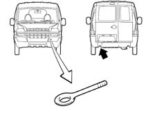

Applies to: all engines; all production periods
The vehicle has a threaded sockets for fitting the tow hook which is housed in the compartment in the spare wheel in the luggage compartment under the carpet and a ring at the left rear.

When towing the vehicle, the laws governing towing and road traffic must be obeyed.Before towing, make sure that the tow hook is fully tightened. Clean the threaded socket thoroughly before screwing in the ring.Turn the ignition key to the ON position and then to the OFF position and DO NOT EXTRACT IT !When the key is extracted, the steering lock is immediately engaged and it is consequently impossible to steer the wheels.Whilst towing, as the brake servo is not working, greater force will have to be exerted on the brake pedal.The towing vehicle should be driven as smoothly as possible to prevent the two vehicles striking one another. Do not use flexible cables for towing and avoid jerking movements.During towing operations, check that the tow cable coupling does not damage parts with which it comes into contact.
After lifting the vehicle, support with safety stands. Before lifting the front of the vehicle, lock the wheels using chocks in behind the rear wheels.
When lifting the front of the vehicle, this may be done only by positioning the lift arm beneath the gearbox-differential unit and placing a wooden or rubber block between the arm and the vehicle.
Applies to: engines: 1.2 8v; all production periods
The vehicle has a threaded sockets for fitting the tow hook which is housed in the compartment in the spare wheel in the luggage compartment under the carpet and a ring at the left rear.
When towing the vehicle, the laws governing towing and road traffic must be obeyed.Before towing, make sure that the tow hook is fully tightened. Clean the threaded socket thoroughly before screwing in the ring.Turn the ignition key to the ON position and then to the OFF position and DO NOT EXTRACT IT !When the key is extracted, the steering lock is immediately engaged and it is consequently impossible to steer the wheels.Whilst towing, as the brake servo is not working, greater force will have to be exerted on the brake pedal.The towing vehicle should be driven as smoothly as possible to prevent the two vehicles striking one another. Do not use flexible cables for towing and avoid jerking movements.During towing operations, check that the tow cable coupling does not damage parts with which it comes into contact.
After lifting the vehicle, support with safety stands. Before lifting the front of the vehicle, lock the wheels using chocks in behind the rear wheels.
When lifting the front of the vehicle, this may be done only by positioning the lift arm beneath the gearbox-differential unit and placing a wooden or rubber block between the arm and the vehicle.